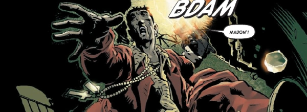

A Mega-City One citizen, Carlito "Bato Loco" Agarra, flies close to the wind and (a bit like Lenny Zero) finds himself struggling between the rock of Justice Department and the hard place of organized crime.
Art by Simon Coleby & Chris Blythe
| Story Title | Parts | Pages | w indicates a wraparound coverCovers | Year(s) | Issues | Writer | Artist | Colourist | Letterer |
|---|---|---|---|---|---|---|---|---|---|
From Judge DreddBato Loco | 1 | 12 | 0 | 2003 | Reprints: M326 (supplement)M202 | Gordon Rennie | Simon Coleby | Chris Blythe | Tom Frame |
| Bato Loco 2125: True Romance | 1 | 8 | Art: Simon Coleby Colours: Chris Blythe 1 | 2003 | Reprints: M326 (supplement)M208 | Gordon Rennie | Simon Coleby | [b&w] | Tom Frame |
Linked to Judge DreddBato Loco 2127: Head Job | 2 | 12 | 0 | 2005 | Reprints: M326 (supplement)M229-M230 | Gordon Rennie | Simon Coleby | Chris Blythe | Tom Frame |
| Kiss Me Deadly | 2 | 18 | 290: Peter Doherty 1 | 2009 | Reprints: M326 (supplement)M290-M291 | Gordon Rennie | Andrew Currie | Peter Doherty | Simon Bowland |
| year | episodes | pages |
| 1996 | 0 | 0 |
| 1997 | 0 | 0 |
| 1998 | 0 | 0 |
| 1999 | 0 | 0 |
| 2000 | 0 | 0 |
| 2001 | 0 | 0 |
| 2002 | 0 | 0 |
| 2003 | 2 | 20 |
| 2004 | 0 | 0 |
| 2005 | 2 | 12 |
| 2006 | 0 | 0 |
| 2007 | 0 | 0 |
| 2008 | 0 | 0 |
| 2009 | 2 | 18 |
| 2010 | 0 | 0 |
| 2011 | 0 | 0 |
| 2012 | 0 | 0 |
| 2013 | 0 | 0 |
| 2014 | 0 | 0 |
| 2015 | 0 | 0 |
| 2016 | 0 | 0 |